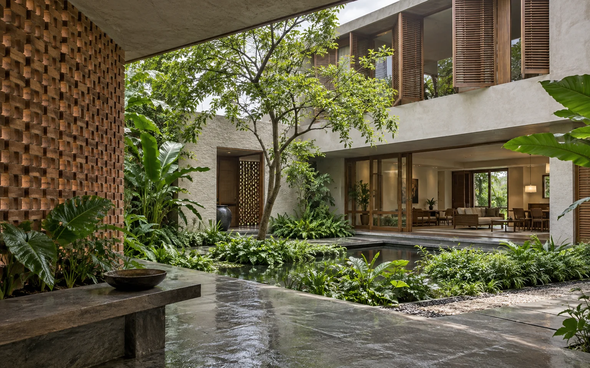

Put shared space beside the court
Living and circulation spaces would share a planted outlook, making the courtyard part of the daily route rather than a feature seen from one room.
An inward-looking home with a planted centre.

The brief
On a closely built urban plot, larger windows do not automatically mean better light or privacy. This study tests a different starting point: give the centre of the house to an open courtyard.
Three decisions
Living and circulation spaces would share a planted outlook, making the courtyard part of the daily route rather than a feature seen from one room.
A screened boundary suggests a way to admit light while reducing direct views from outside. Its openness would be tested against the actual surroundings.
An open court needs a practical approach to rain, maintenance and ventilation. Those requirements belong in the plan from the beginning.